Why Ireland is not a British isle: the evidence
This is the second half of “Why Ireland is not a British isle”. The main article tells the story. This page has the evidence: the bad excuses people use to keep calling Ireland a British isle, and the sources that answer them.
Appendix 1 — Stupid Counter Arguments (bad excuses)
1. It’s a purely geographical term
It’s not. It never was. Read the main article.
Even if you don’t believe that its effective origins in the 1500s and 1600s were as a political term, it’s clearly still a political term today. Irish people will tell you they regard it as political. That is, by itself, enough to make it political.
Then there are little things like King Charles of the UK and the governments of the Channel Islands saying that the Channel Islands are in the British Isles. They’ve been in the British isles for a LONG time. Since the term was resurrected.
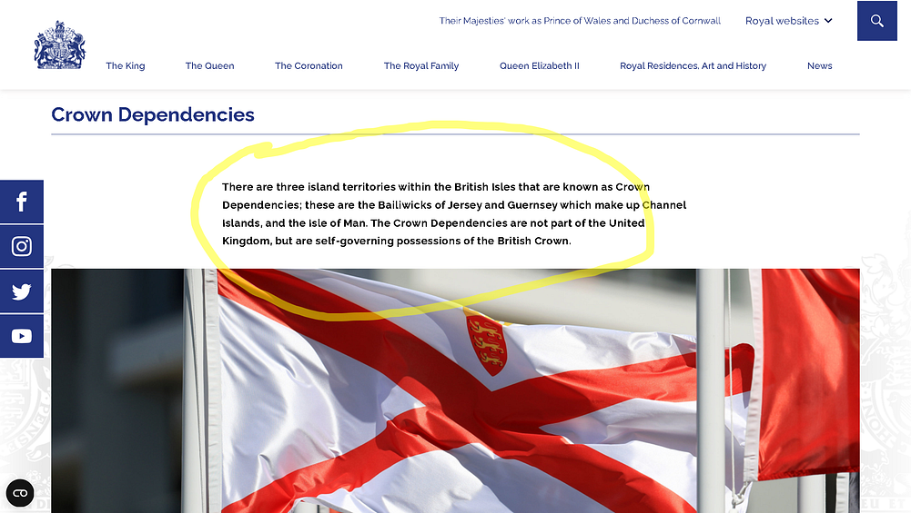
Now, whatever else you think about them, the Channel Islands sit in the Gulf of Saint-Malo, off the coast of Normandy, on the French continental shelf. Jersey is about 22 km from France and well over 100 km from England. They’re NOT part of whatever you want to call the archipelago of Britain and Ireland. Geographically, they belong with France. Politically, they are British and belong to the British Crown.
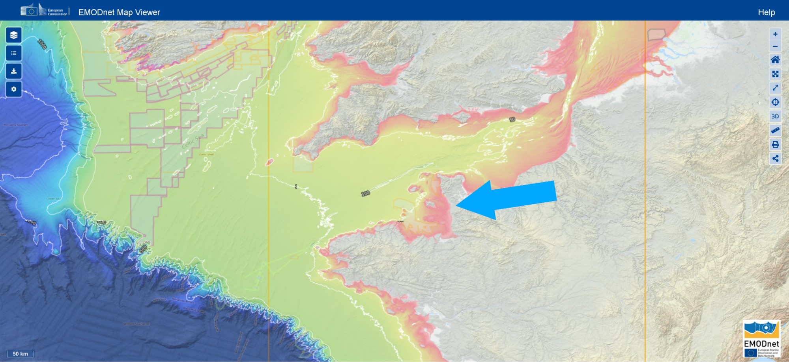
It’s therefore doubly clear that the term “British Isles” is political. It cannot be a “purely geographic term”. And if you’re telling me it is, go tell King Charles first and get back to me.
By the way, the idea that the Channel Islands are not in the British Isles is widely used by people trying to claim that Ireland is in the British Isles. It’s a bit mad, really.
Their problem is that if the Channel Islands are in the British Isles (and they are) then the term can’t be purely geographical. If it’s not a geographical term (and it’s not) then it’s perfectly logical to have to admit that Ireland is not in the British Isles any more….and they’re desperate that Ireland should still be in the British Isles.
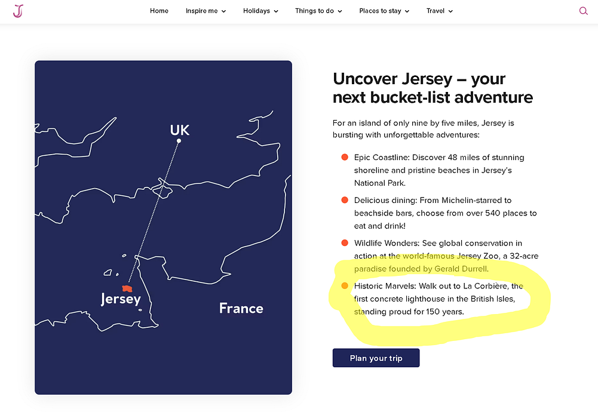
Can you get your head around that one? I don’t get it. Other than a last claim to be powerful, I don’t get it.
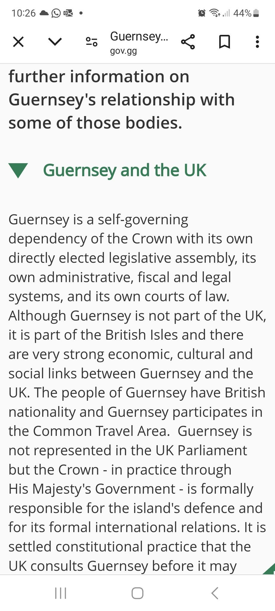
Plus, the names of things are (as mentioned in the article) always political. Calling something a river or mountain or sea. That’s geographic. But then the name of the river or mountain or sea. That’s usually political.
You might try to explain how some of these terms below are purely geographical and others are not. In reality few names of anything are “purely geographical”. It’s a nonsensical idea.
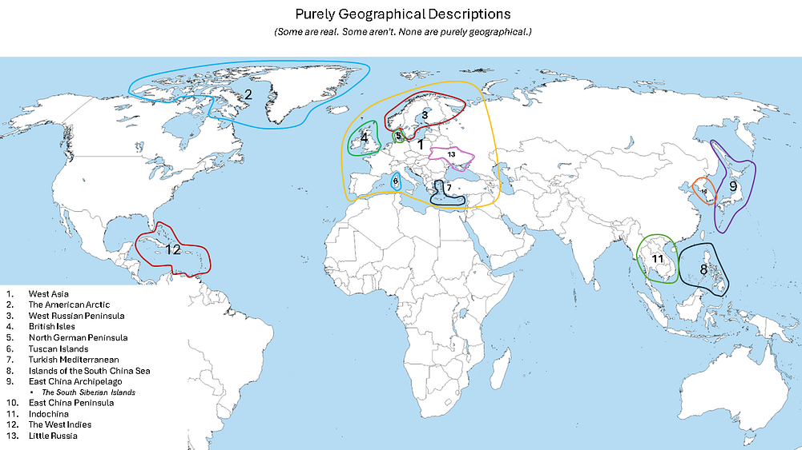
2. It’s been in use for thousands of years.
If you read the main article, you’d see that it hasn’t. Effectively, it originates in the 1500s and into the early 1600s. (this section is long….advance warning)
The OED gives the first use as John Dee in 1577. Dee, as mentioned, was a Tudor propagandist (and many other things).
The AI links in the main article (which are a starting point) tell you that neither the Romans nor the Middle-Ages used the term. It was resurrected in the 1500s as being a term that could claim to have ancient roots because that suited a political project.
You’ll hear people say “But Pytheas” or “But Ptolemy”….
It’s common understanding that some ancient Greeks used terms to describe Britain and probably Ireland and Thule (Iceland). Pytheas is the main source claimed, even though we don’t have his text and later Greeks expressed serious doubt about his reliability.
We also have Greeks talking about Britain and Ireland in the 1st Century BC. This is at about the time the Romans were approaching Britain, and several centuries after Pytheas. And these Greeks talk about Britain and Ireland quite separately rather than using a collective “British Isles” type term for Britain and Ireland. And we even have Greeks talking about “British isles” and Ireland as being separate things.
First, let’s take Diodorus Siculus, in the 1st Century BC. He talks about Britain in his Bibliotheca Historica , Book V, Chapters 21 and 22 and describes it as a triangular island. He talks about the tin trade, and about St. Michael’s mount in Cornwall and about other islands near Britain. In Book V he says Caesar was “the first man of whom we have record to have conquered the island”, meaning Britain. In Book I he describes the same achievement as advancing the Roman Empire “as far as the British Isles”. So for Diodorus, “the British Isles” was where Caesar went. And Caesar never went near Ireland.
Siculus never clearly mentions Ireland, and the islands of Britain that he mentions are clearly small islands of Britain like Wight (Ictis) and perhaps St. Michael’s Mount. All there is beyond that is a general mention in the beginning that there are many islands in the ocean and that Britain is the biggest.
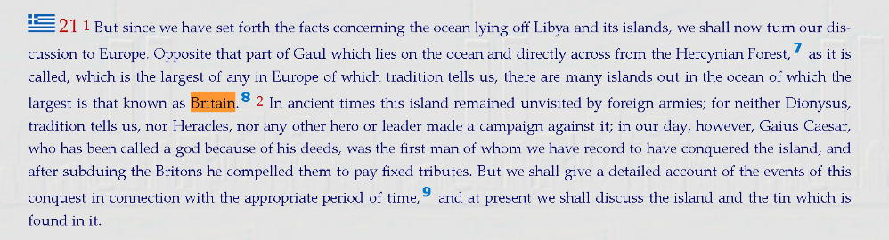
Siculus is one of the main “echoes” of the original Pytheas of Massalia, but claims that he includes Ireland in some collective “British Isles” are mostly retroactive fitting. The claims are made, but they’re not sustained by the text unless you already believe that what the text says.
The Greek text of Siculus can be seen here (click forward through the chapters) and an English translation can be seen here.
Note that you will often see claims that Siculus did describe Ireland…calling it “Iris”. Once, in passing, he mentions cannibal “Prettanoi” living in a land called “Iris”. Philip Freeman, who looks at this closely, finds it tempting to see Ireland there, but notes that “Iris” isn’t actually a close linguistic relative of the ancient names for Ireland, that no other ancient writer ever calls the Irish “Britons”, and that cannibalism was a standard slur for barbarians everywhere. His conclusion: it’s possible, but “it remained for Diodorus’ contemporary, Caesar, to provide the first unequivocal reference to Ireland in the ancient literary sources.”
Freeman does say that “Ireland was certainly considered one of the British Isles by the ancients”. But look at how he explains Diodorus calling its people Britons: Diodorus or his sources thought of everyone on those islands as Brettanoi, “in the way that all those living south of Egypt were Ethiopians to the earliest Greeks”. An outsider’s label, stretched over people it didn’t describe. Just like “Pretanic”.
So if Siculus is talking about Ireland anywhere, it’s not clear or sure. Yet all through the period of British rule in Ireland, it was presented as sure. It still is presented that way on Wikipedia. It’s bollox, but that’s Wikipedia for you.
Then there’s Strabo, also in the 1st Century BC. He discusses Pytheas as a source and calls him an “arch falsifier”, at least in this translation. The exact insult varies by translation.
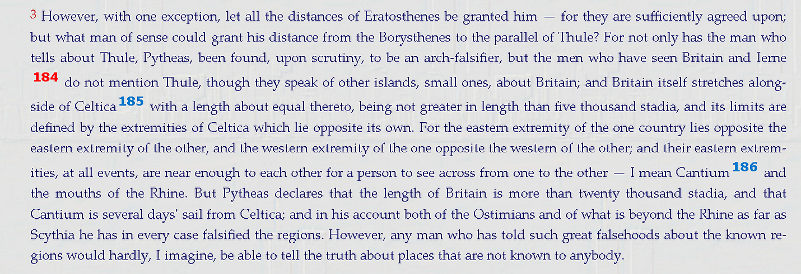
He also describes “some small islands round about Britain” and then, separately, “a large island, Ierne”, whose inhabitants, he says, “are more savage than the Britons”. Not Britons, in other words. He’s not very complimentary about Ireland or the Irish either, to put it mildly.
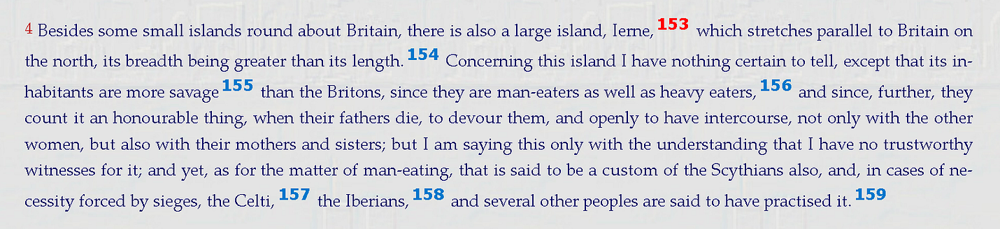
In other places he talks about Ireland being the end of the world and the limits of human habitation, and that he doesn’t even know how far it is from Britain to Ireland (Book 2, Chapter 5, Section 8).
the distance that should be set down for the stretch from Britain to Ierne is no longer a known quantity,
So, is Ireland in some collective “British Isles” that Strabo or Siculus write of? Not unless you’re already determined to read Strabo and Siculus that way. It’s hard to argue that Strabo is defining a collective unit of Britain and Ireland when he says he doesn’t know how far they are from each other.
To be fair, Strabo does once list “the Britannic islands” as a group (Book 2, Chapter 5, Section 30), in a quick round-up of the islands off Europe: “Gades, the Cassiterides, and the Britannic islands”. He doesn’t say Ierne is one of them. That’s an inference, and it’s usually made by readers who already assume the answer. Read the text without that assumption and it’s not at all clear that he means to include Ireland. And look at the company the phrase keeps. The Cassiterides, as Strabo places them, don’t exist. And he’s already admitted that the distance from Britain to Ierne “is no longer a known quantity”. That’s not geography. That’s an old list being repeated. When he actually describes Ireland, it’s a separate large island whose people are “more savage than the Britons”.
So if you’re basing a modern claim that the term “British Isles” always included Ireland, and must always include Ireland, on one line in a list that also contains islands that don’t exist, that’s thin. Very thin.
Another brief Greek example, and one of the ones most often used as justification, is a short treatise, Peri Kosmou (“On the Universe”), better known by its Latin title, De Mundo. It was once attributed to Aristotle and was probably written in the 1st century BC or AD. In one sentence, it says the ocean holds “two very large islands, called Brettanic, Albion and Ierne”. That’s it. No description, no detail, just the old Greek label, with Ireland still called by its own name, Ierne. It names no sources. It’s a summary of earlier Greek geography, going back ultimately to Pytheas.
Meanwhile, the Romans were actually going there. Caesar called Ireland Hibernia, an island of its own. And Pliny, writing in the 70s AD, treats the collective “Britanniae” as something things used to be called. Apuleius created a Latin version of the Peri Kosmou as De Mundo in the 2nd century AD. In it, he included “the two Britains, Albion and Hibernia”. He was translating and adapting a Greek text, and repeating a label Pliny had already treated as old, much as a translation of an ancient Greek text today will still talk about Scythia, a land that no longer exists. It’s the same outsider’s label again: the one Freeman compares to the early Greeks calling everyone south of Egypt “Ethiopians”.
The same passage goes on to name Taprobane, beyond India, and an island called Phebol. Elsewhere, De Mundo calls Africa “Libya”, says the whole inhabited world is a single island, and has the Caspian as an inlet of the outer Ocean. Nobody insists on any of that today. Only the “Brettanic” label gets treated as somehow sacred.
And look at what kind of work it is. De Mundo is mostly about the heavens and God. Its longest section, well over a third of the whole, is about how a single divine power orders the universe, like a Great King ruling his empire. Much of the rest is about winds, rain and earthquakes, and how opposites are held in harmony. The whole of the earth’s geography gets one short chapter, and Britain and Ireland get one sentence of it. One passing sentence in a theological essay is a thin foundation for a modern name.
Strabo also talks about Pytheas describing Thule as being the northernmost of the Britannic Islands, though he’s VERY sceptical about the story. Modern historians are pretty positive that Pytheas’ Thule was Iceland.
Cunliffe says that the evidence that Thule is Iceland ‘seems unassailable’. (Cunliffe 2001, p130). Breeze and Wilkins are of the same opinion (Pytheas, Tacitus and Thule, 2018, The Society for the Promotion of Roman Studies).
So….Iceland was in the British Isles……
Meantime, the Romans did eventually get to Britain. And it’s clear that the Romans didn’t use a collective term for Britain and Ireland. Nor did people in Europe after the Romans.
Caesar, the first serious Roman to get to Britain, talked about Britain quite a bit and mentioned Ireland as a separate place. No British Isles. Britain and Ireland are, in Caesar’s telling, two quite separate places. No British Isles. Also not mentioned on Wikipedia.
That’s not a small point. It’s the first unequivocal mention of Ireland in all of ancient literature. Ireland’s debut in written history is as Hibernia, an island of its own. Not as a British anything.
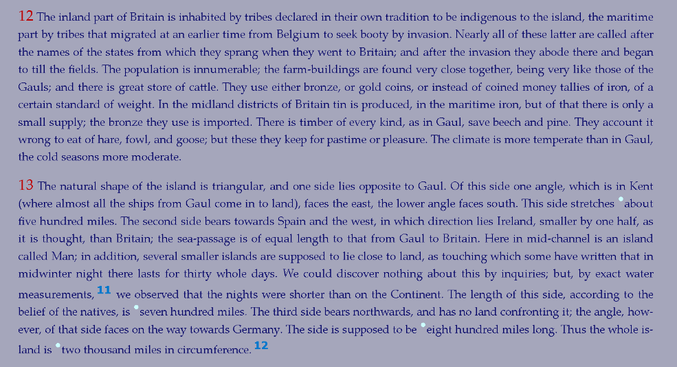
Ptolemy, writing in the 2nd century AD, did call Ireland a British isle. It’s important to note a few things though.
One is that the Greek world (and Ptolemy — while a Roman citizen — was Greek, wrote in Greek, and lived in the Hellenistic world) had no ongoing contact with Britain or Ireland after the Romans expanded into the west and the western Roman world didn’t read Greek writers. People speculate about the sources Ptolemy used, but we’re not sure. However, we are sure that Ptolemy’s Geography was not read in or much known (it was known of, but the work itself was not known in the west) in western Europe until much MUCH later. At least 1000 years later.
And remember, despite his later fame during the Renaissance, Ptolemy also thought that the earth was the center of the universe and that the Indian Ocean was a closed sea, so his word is not exactly definitive. And in terms of Ireland and Britain he might as well have been talking about the moon.
In fact, it seems no-one in Britain or Ireland or even Europe was calling Britain or Ireland the “British Isles” until the mid 1500s when it suited the Tudors to take some ancient terms and use them in support of their political project at the time.
You will read in many books and articles that the term was in use all through the Roman Empire and the middle ages. It just isn’t so. You’ll read that all of the writers I mention below talked about the British Isles. It’s simply not true.
What happens is that modern writers read those older writers talking about Britain and Ireland separately, and the later writers retroactively describe that as being about the British Isles. That had become the term to use in the intervening centuries since the early texts, but it’s not actually in the old texts themselves.
Again, the original texts actually talk about Britain and Ireland separately. It’s only later retroactive description that makes it “British Isles”.
Similarly with medieval maps. The Hereford Mappa Mundi is often said to contain a map of the British Isles. A quick google search should confirm this idea. But there is no mention of any such term on it or other similar maps — not on the actual maps. The word Britannia is there, or Albion. And also Hibernia or Scotia. But no collective term or description.
We do start seeing the ancient label again once Ptolemy is translated into Latin, from the early 1400s, and in print from the 1470s. But it’s presented as Ptolemy’s label, an ancient description. It’s only in the 1560s and 1570s that it becomes a current name, and a political one.
But let’s go through this century by century.
Pomponius Mela in the mid 1st century is particularly often said to have used the term Britannia or Britanniae or “insulae Britanniae” to describe Britain and Ireland together. I don’t know why since there is no such mention in the actual text of Mela. Instead he describes Hispania and then Britain and then Ireland all quite separately. See for yourself here. No collective British isles. Just separate descriptions of “the islands Britain and Ireland”. He’s about as late as it gets in any case.
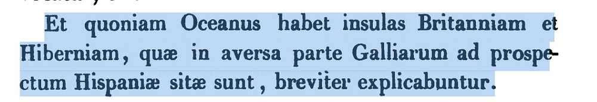
Cassius Dio in the early 3rd century wrote a History of Rome. He talks quite a bit about Britain in relation to Julius Caesar’s invasion and later in relation to Claudius’ invasion. No mention of Ireland and no British isles. He does mention how the earliest Greeks knew nothing of Britain and how later Greeks didn’t know if it was an island or a continent.
Similarly Solinus described Britain and Ireland in the 3rd century. No British isles. Just separate descriptions of Britain and Ireland.
Solinus went on to become very popular in the middle ages and into the Renaissance. And no “British Isles”. He does talk about the islands around Britain and mentions Ireland as being the next biggest. But he doesn’t talk about any collective unit.
Orosius wrote a text on Europe in the 5th century. Descriptions of Britain and Ireland, indeed. No British isles. Just separate descriptions of Britain and Ireland.
St. Patrick wrote about Britain and Ireland in his autobiography, the “Confessio”. No British isles. He also wrote an Epistle, to the soldiers of Coroticus, a British ruler. No British isles.
(Similarly, though they occupy this whole period and I won’t mention them century by century, the Irish Annals also don’t talk about Ireland being a British isle. There is one mention of Vikings raiding islands of Britain. Yes. Britain has islands. Iona. The Western Isles. There’s no description of Ireland being a British isle, despite the valiant attempts of Wikipedia to claim otherwise.)
Gildas wrote in the mid-6th century about the fall of Roman Britain. Rare mention of Ireland, lots of Britain, no British Isles.
Isidore of Seville — one of the Middle Ages’ greatest scholars who lived in the 6th and 7th centuries — mentions Ireland and Britain on the same page of the Etymologies where all the world’s islands are listed. No British Isles. Just separate descriptions of Britain and Ireland. You’ll often read how Isidore describes the British isles. But it’s not true.
The Venerable Bede, a writer of early England in the 7th and 8th centuries, talks about Britain and Ireland. No British Isles. Just separate descriptions of Britain and Ireland.
Adamnan’s “Vita Columbae” from the 7th century is a biography of Columba and is one of the earliest descriptions of life in early medieval Ireland and Scotland. It describes Britain and Ireland. No British Isles.
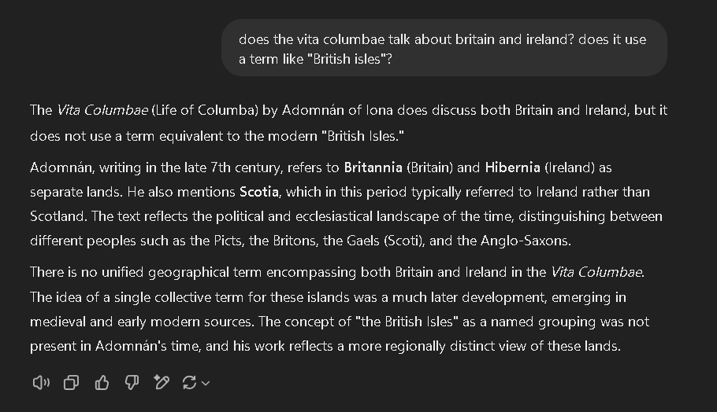
Similarly, the 7th century “Vita Columbani” by Jonas of Bobbio is a biography of Columbanus. Again, Britain and Ireland, but no British isles.
There is one ambiguous mention in Dicuil in the early 9th century. He mentions “insulis Britannicis”. Claiming that this text includes Ireland needs a brave retroactive assumption. It does seem that he’s talking about Britain and its own smaller islands. Here’s the text. Here’s a translation and conversion of the Roman miles into modern units.
Importantly, the east-west width he gives in that section is — as for other writers using similar descriptions — about right for Britain and could cover much of Gallia Comata, but is way too low for Britain and Ireland together. And the Pliny measurement he mentions is even narrower, indicating even more that it’s only Britain and its own smaller islands that are being described. Britain is about 300 miles wide, about in line with the text. Britain and Ireland together are about 166% of the Dicuil numbers and about 180% of the Pliny numbers. As for the length, the Dicuil and Pliny numbers are long enough to cover all of Britain and bring you down into central France. The distance needed to cover Aquitaine as well is about 117% of the number given. That seems more reasonable as an error than 166% or 180%.
Dicuil also talks about Ireland (Hibernia) and Britain quite separately in the same book. For instance here he talks about Ireland and its islands and Britain and its islands, all separately. Cutely, he calls Ireland “our island”.
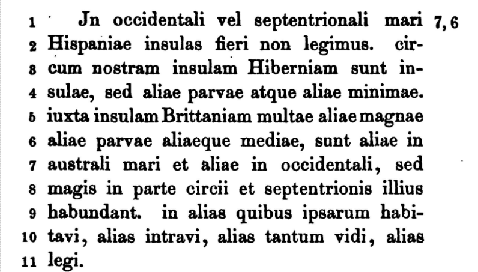
Here’s a translation of that last section.
Nennius’ book “Historia Brittonum” was written in the 9th century. He was Welsh. No British isles. Just separate descriptions of Britain and Ireland.
There are also the various minor Latin texts gathered by Riese and later Schnabel. These include the “Divisio Orbis Terrarum”, which is hard to place exactly, but it’s late Roman, probably 5th century, and built on Agrippa’s material from the time of Augustus. It overlaps a lot with Dicuil, because Dicuil used it in the 9th century, not the other way around. There is also the “Cosmographia” or the “Cosmographia of Julius Caesar” by Julius Honorius (4th or 5th century).
And finally the Dimensuratio Provinciarum — a text supposedly based on Agrippa, though it’s hard to be sure. That is often dated to the late 4th century though again it’s hard to be precise.
The Divisio repeats the section about Gallia Comata and the “insulis Britannicis” mentioned earlier with Dicuil. It lists similar dimensions and the same likely meaning that this term refers to Britain and its islands and not to Britain and Ireland.
The Cosmographia describes Britain and Ireland quite separately. It calls Britain an island of the ocean.
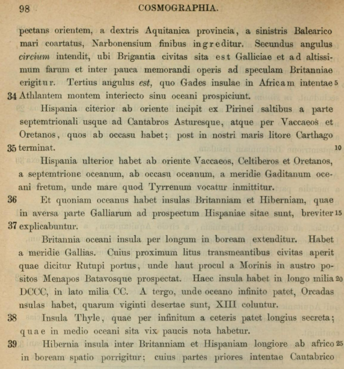
No “British Isles” there either. It also lists the islands of the western ocean, listing Britain and Ireland and several others all quite separately.
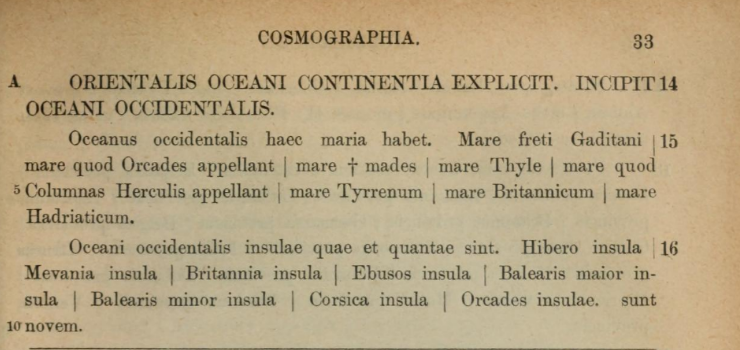
The Agrippa is more fragmentary, but does include a section on Britain that is interestingly similar to the sections above talking about “insulis Britannicis”, and with interestingly similar dimensions. Britain, clearly on its own this time, is 300 miles wide. This aligns well with the dimensions of “insulis Britannicis” mentioned above. Wide enough for Britain on its own. Not even vaguely wide enough to be Britain and Ireland together.
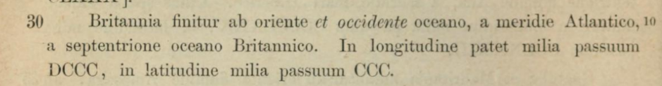
Basically, no hint that Ireland is part of any “British isles”, unless you’re going back in time and retroactively fitting your assumptions into place.
Another hard-to-place book is the Patrologia Latina, a collection of very many church writers from the early church through to the late Middle Ages. There are THOUSANDS of pages in the collection done by Migne in the 1800s. Extensive news from Britain and from Ireland. Extensive mention of the island of Britain. Mention of the start of the Viking age with the attacks on the coast of Britain. But no British Isles.
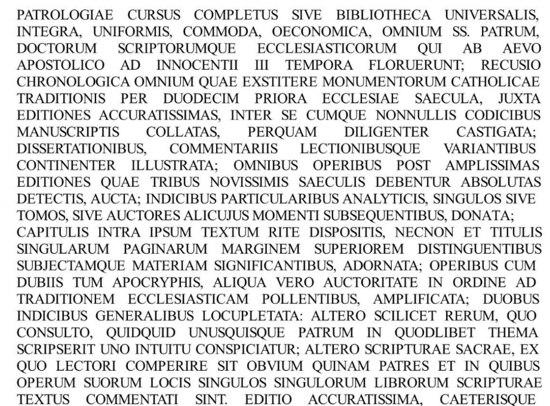
Onwards…..
Adam of Bremen writing in the 11th century also writes about Britain and Ireland. He was from, ehm, Bremen. But no British isles. Just separate descriptions of Britain and Ireland.
William of Malmesbury’s history of the Kings of the English from the early 12th century? No British isles. Just separate descriptions of Britain and Ireland.
Giraldus Cambrensis (Gerald of Wales), writing in the 12th century, gives a detailed description of Ireland in his book “Topographia Hibernica”. No British isles. Just separate descriptions of Britain and Ireland.
Ralph de Diceto’s works, the Abbreviationes Chronicorum and Ymagines Historiarum, were written in the 12th century while he was Dean of London. No British isles. Just descriptions of Britain and barely a mention of Ireland.
There’s also Honorius’ “Imago Mundi”, also from the 12th century. This was a very popular book and appears in multiple versions. Some mention Britain and Ireland and several other islands under the category of Gallia Belgica (this one). Others list Britain and Ireland in a section titled “Britain”, like this one or this one. The chapters or sections in the whole thing seem flaky. Constantinople is not mentioned at all in some versions, is included in “Lower Germany” in another (page 137), and in Thrace in still another (mentioned in the previous link).
The earliest version is from the 12th century — so pretty contemporaneous with the original writing — and doesn’t use chapter or section headings at all, just listing Britain and Ireland and England and Tanatos as islands in the ocean opposite Spain. In any case, no “British Isles” in any of them.
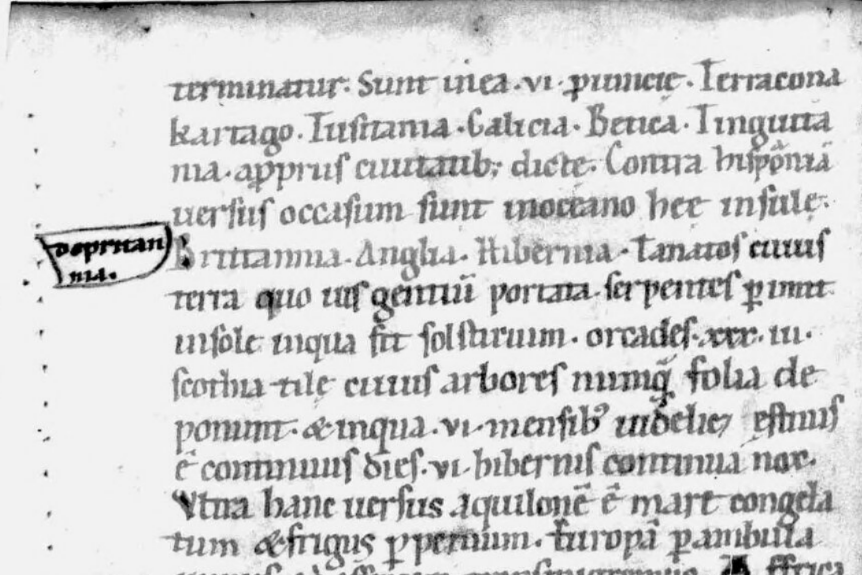
Roger of Hoveden’s “Chronica” was written in the 12th century. He was an English chronicler. No British isles. Just descriptions of Britain and barely a mention of Ireland.
Henry of Huntingdon wrote his History of the English (modern translation) in the early-mid 12th century. Lots of discussion of Britain and Ireland. No British Isles. There’s also an older version here.
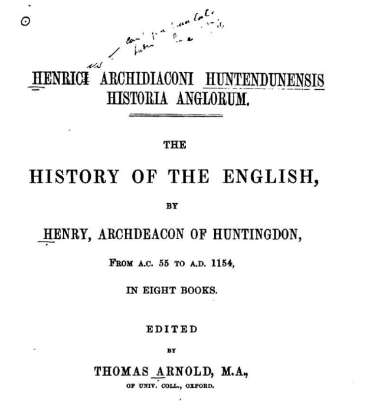
Geoffrey of Monmouth wrote the history of the Kings of Britain in the 12th century. It’s full of fanciful tales, with Kings of Britain conquering Ireland and Iceland and Wales and Scotland and Norway. No British Isles. Just separate descriptions of Britain and Ireland.
Matthew Paris’ “Chronicles” from the 13th century are similarly unproductive. Frequent mentions of Britain and Ireland. But no British isles. Just separate descriptions of Britain and Ireland. He was another English chronicler.
The Scottish chronicler John of Fordun wrote a history of Scotland in the 14th century. He calls Britain and Ireland “islands of Europe”. No British isles.
Ranulf Higden’s Polychronicon in the mid-14th century writes about Britain and Ireland. No British Isles. There is a place where he talks about the island of Britain (in latin) which is occasionally mis-translated to try to claim he’s talking about British Isles. He isn’t. There’s also a Middle English version and a more modern English version in this text, so it’s very clear that he means the island of Britain, singular. The link is to the specific place where he uses the term. And here’s the original Middle English translation, with apologies that a few of the letters don’t paste accurately.
“I haue y-kast and y-ordeyned, as I may, to make and to write a tretes, i-gadered of dyuerse bookes, of te he staat of fe yldndd of Britayne, to knowleche of men fat comef after us.”
Higden says himself that a lot of his text is based on Cambrensis, already mentioned above. Also worth noting that the translation of Higden into Middle English doesn’t insert the idea of “British Isles”. The introduction to the more modern English translation — in the late 1800s- talks about how Higden describes the British Isles….when he does no such thing.
Roger of Wendover wrote a history of Britain called the “Flowers of History” in the 13th century. No British isles. Fairly frequent and separate mention of Britain and Ireland.
Hector Boece, from Scotland, wrote a history of the people of Scotland in the early 1500s. He died in 1536
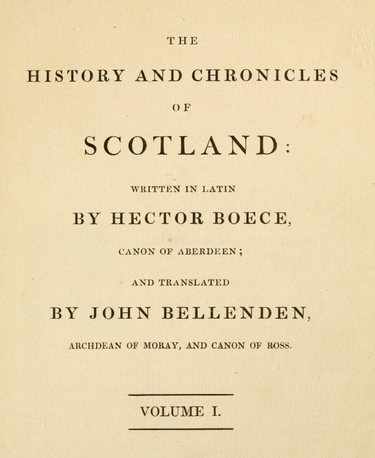
That version is in Scots of the time. There’s currently a modern English version here. No British Isles. Just extensive mention of Britain and Ireland. He gives a fantastical version of the history of Scotland and the Scots.
William Caxton, the famous first printer in England, updated and printed a revised version of Higden’s Polychronicon in the late 15th century. Same story as above. No British Isles.
Caxton also wrote a book called The Description of Britain . He includes Ireland in the book, as he mentions here.
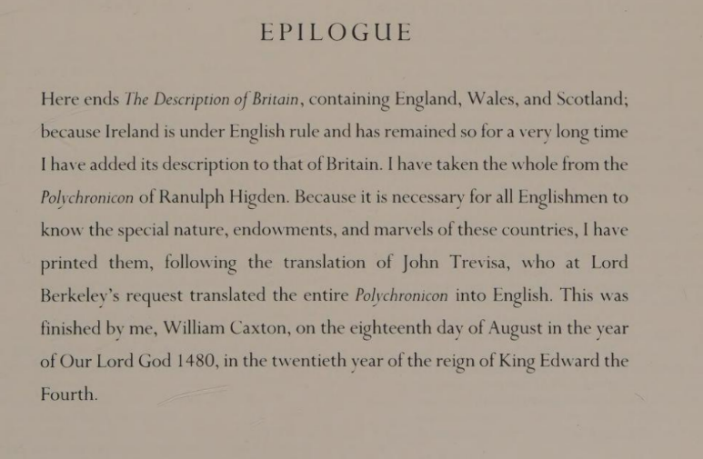
It’s worth noting that Caxton’s book isn’t a straight reprint of the Trevisa translation of Higden’s original Polychronicon. He adds comment and explanation in various sections.
One odd point is that Caxton says there are three adjacent islands of Britain, these being Wight, Anglesea and Man, and he says this is “not counting” the Orkneys. He also separately mentions Thanet (off the Kent coast) as a separate relevant island. This is in line with other earlier descriptions that mention “Tanatos” as an island of Britain. But it’s just odd how he lists the islands. To me, anyway.
As for Ireland, there are several chapters. Caxton starts by saying that Ireland was “under the dominion of Britain”, which was true enough at the time. He’s generally pretty uncomplimentary about the Irish. He’d have fitted right in to the staff at Punch in the late 1800s.
Still, while the modern translator (Marie Collins) repeatedly talks about the British Isles, Caxton’s book makes no such mention.
We’re basically up to 1500 by now. No British Isles. Not for a thousand and more years. Not in Britain or Ireland or the west.
Again, look at the Roman and British writers above — nary a mention.
Now, it’s really important to note that it is common for writers in modern historical literature to say that all the medieval writers above described the British Isles. They didn’t….they described Britain and Ireland. The other term came later and has been shoehorned back in time.
The first appearances of “British isles” in western Europe, essentially ever, start with the rediscovery of Ptolemy, with translations of Ptolemy into Latin and then with widespread circulation of the term.
It’s worth mentioning that there are also Arabic mentions of there being 12 “islands of Britain” in the sea of the Romans. They are casting back to Ptolemy — with the Arabs being the inheritors of Alexandria and all that. The infamous Wikipedia article claims that this meant that the term was somehow in continuous use through the middle ages. Ehm…no. The Arabs translated Ptolemy. And that’s it. No-one in western Europe was using Arabic geographical terms.
The key document which brings the idea of “British Isles” back in to the west is Ptolemy’s “Geography”, which mentions Ireland as a British isle — alongside Albion. He had earlier used the famous “Little Britain” term, but then later used a version of Hibernia. His use of “Little Britain” for Ireland was unique in the ancient world. An anomaly he corrected on his own. More recently Wales is “little Britain” in Irish. And Great Britain distinguished itself from Britanny. Bretagne. Grande Bretagne. Ptolemy was long dead when this was going on.
However, since Ptolemy is one of the key sources used to claim that the term “British Isles” had been in continuous use for millennia, it’s important to consider a few things about Ptolemy.
Ptolemy had written in Greek and his Geography had never been much read in western Europe. If, essentially, read at all in western Europe. (His astronomy, the Almagest, was translated into Latin in the 12th century. The Geography was not.) People knew about the Geography, but by reputation only.
Then, the Geography had vanished even in Greek. The Greek text was thought for a long time to have been lost entirely. The only place the Geography was known was in Arabic, so its terms certainly weren’t in use in western Europe. And as we can see above, other writers were calling Britain and Ireland just Britain and Ireland, separately.
A copy of Ptolemy in Greek was discovered in 1295. Even then, the Ptolemy text did not have the maps you often see as being Ptolemy’s maps. It didn’t have any maps at all. The earliest versions of maps based on Ptolemy were made by Planudes and now exist probably only in two places. This is one of them, in the Vatican library.
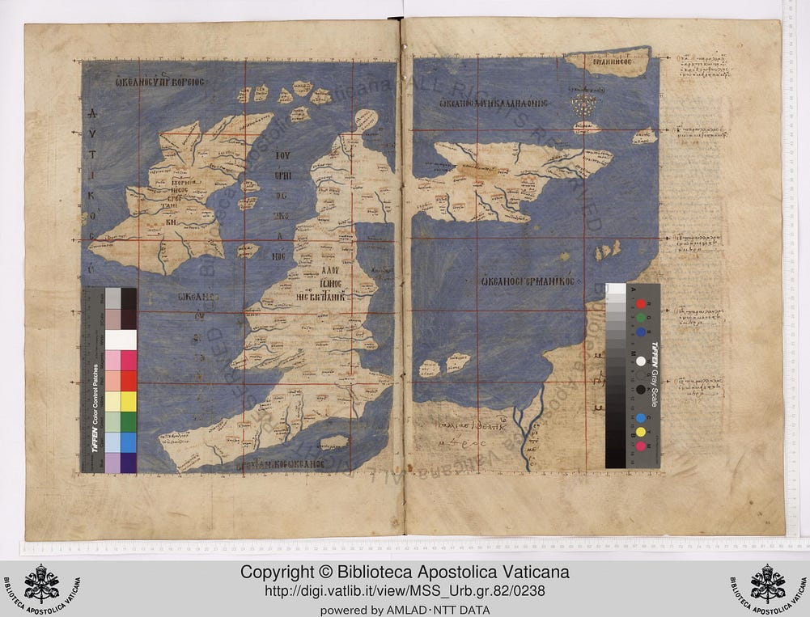
You can see Thule in the top-right corner and also see that these were not accurate maps of Britain or of Ireland. Also Ptolemy had repeated an error by Agricola in considering that Thule was Shetland (see Breeze and Wilkins again)
No “British Isles” on that version either.
The first translation into Latin, by Jacopo Angeli, was finished around 1406–1410. The first manuscripts had no maps; they were added later, many of them by Nicolaus Germanus. The first printed edition came out in Vicenza in 1475, the first with maps in Bologna in 1477, and then Ulm in 1482, the first printed north of the Alps.
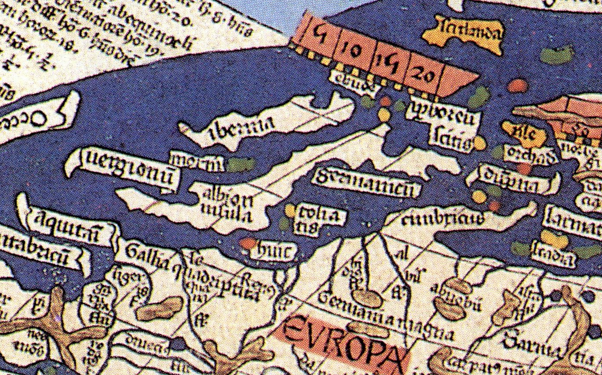
The text keeps Ptolemy’s heading for Ireland: “Hibernie Britannice insule situs”, the position of Hibernia, a Britannic island. But look at the Ulm map itself. Britain is labelled “Albion insula Britannica”. Ireland is just “Hibernia”, without any mention of being a British isle.
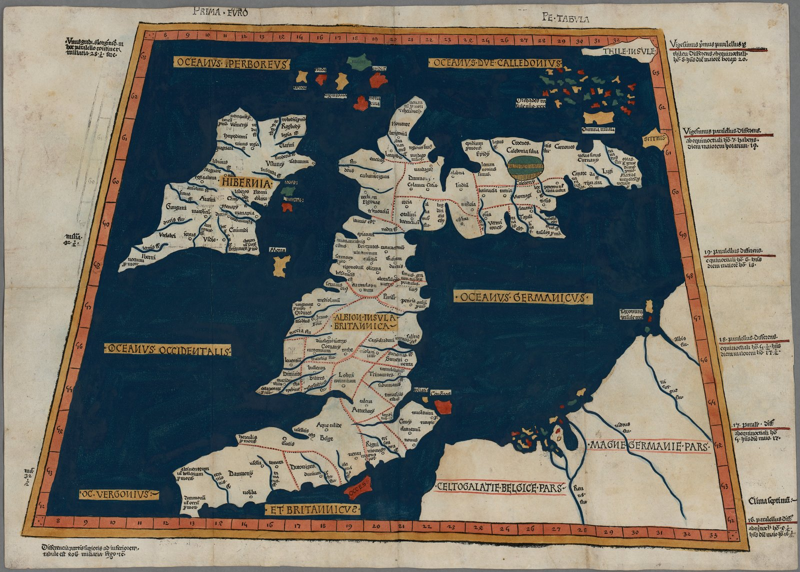
Then the Strasbourg edition of 1513 did something interesting. Alongside Ptolemy’s ancient maps, it added a set of new, modern ones. The modern map of these islands is titled “Tabula nova Hibernie Anglie et Scotie”, a new map of Ireland, England and Scotland. No collective name. Nothing on the island of Britain is even called Britain. The only “Britannia” on the whole map is “Britanie pars”, across the Channel in France. That’s Brittany.
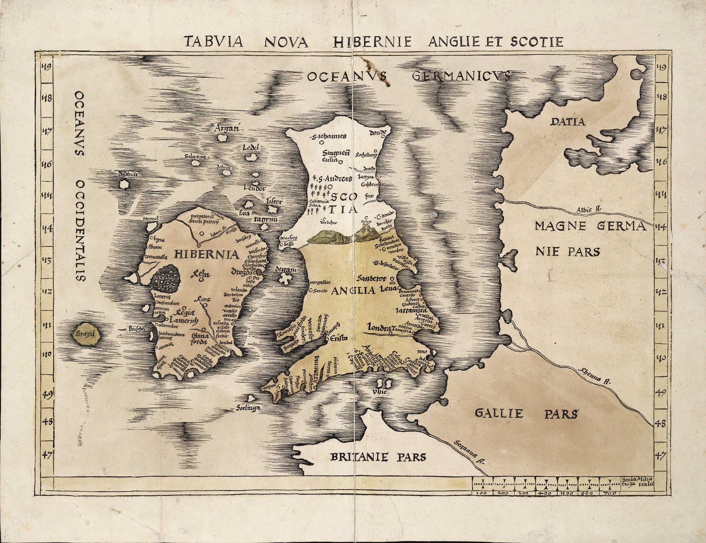
So the same atlas showed both: Ptolemy’s ancient “Britannic” islands, and a modern map of three countries with no collective name at all.
As a side note, translations of the Ptolemy from Greek into Latin also caused some later scholars to wonder whether the “Pretanic” of the early Greeks and of Ptolemy were in fact completely separate from the later “Britannia” of the Romans.
It’s a minority view, for sure, but there is very little in the way of solid ground for anyone to stand on when it comes to these terms. It’s certainly another angle. (Read Rhys, Cunliffe, Oppenheimer and Thomas for more, if you really want to)
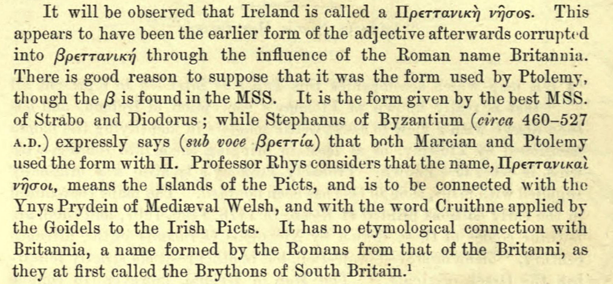
Through the late 1400s, people are trying to put maps together. There are a variety of attempts. This here below is the Benincasa from 1467. No “British Isles”.
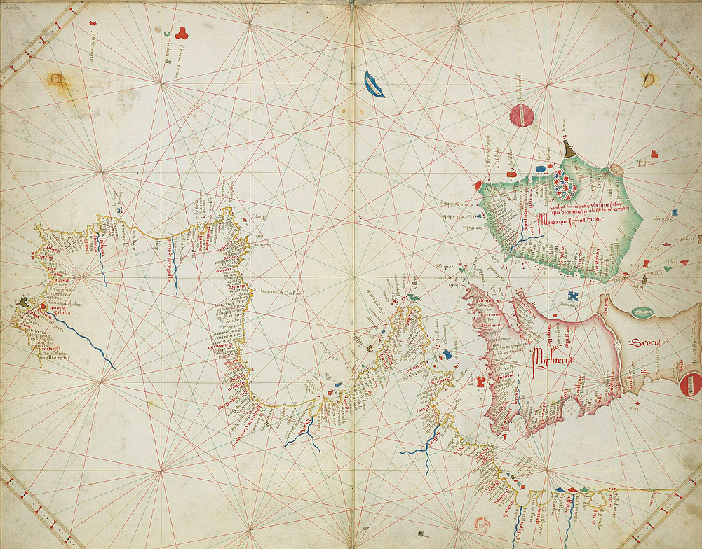
It’s in the 1500s that British Isles pops up more, particularly in the mid-late 1500s as printing became more widespread and as Ptolemy became popular. As we saw above, Caxton didn’t use the term in the late 1400s.
This matches a critical period in Irish political history, as described in the main article. A fortunate or unfortunate coincidence, depending on your point of view.
In any case it’s only in the 1500s, during the Tudor (those aspiring Britons) conquest of Ireland that the term gets used, reapplied, and then repurposed in politics. Other resurrected Ptolemaic terms didn’t stick (more below).
Map making has been pushing ahead, with the Portugese, Genoese, Catalans, etc, all in full flow. The Lopo Homem maps of the world are pretty good. No “British Isles” in any of them.
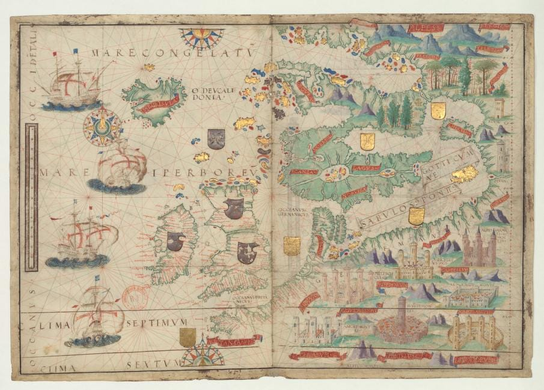
His 1519 world maps (see here) are perhaps as good as the later Mercator (see below), and without some of the Ptolemaic mistakes.
In 1529 we see Spanish maps with a pretty decent world view. You can see the full map by clicking on the caption of the zoomed in section shown below. No “British Isles”.
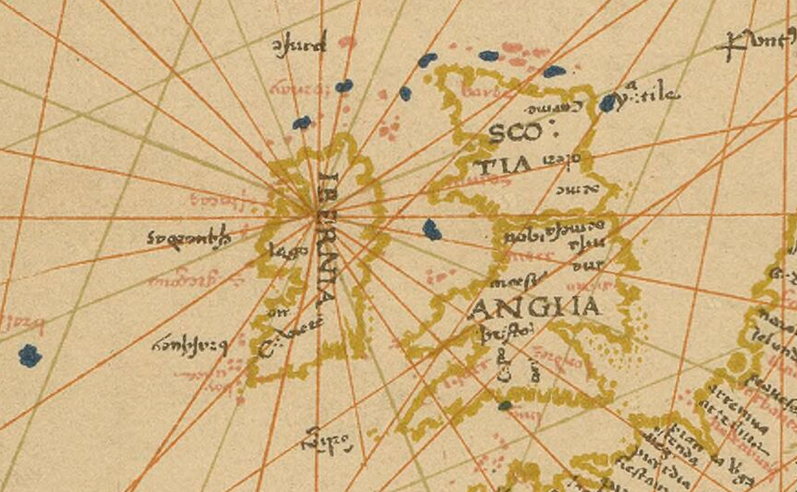
Similarly, we have maps like this one from 1536. The portolan by the Conte di Ottomano Freducci. Scotland and the north and west of Ireland are pretty flakey, but no “British Isles”.
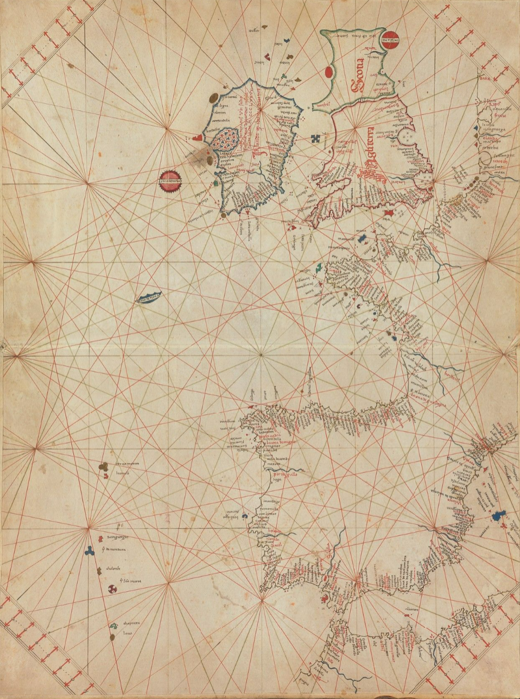
However, then Ptolemy really starts to appear.
Mercator’s heart-shaped map of 1538 is one of the earliest attempts to incorporate Ptolemy and more modern learning.
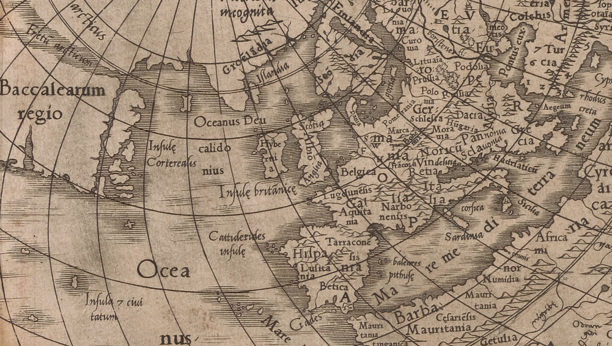
On this map you can see Britain is “Albion”, and the words “Insule Britanice” are placed below Ireland and Britain. This is essentially Ptolemy, resurrected. Similarly the “Cassiterides Insulae” are shown off the NW coast of Spain, though these don’t exist. Or they’re possibly the Scilly Isles, transported south several hundred kilometers. Again, Ptolemaic mistakes, resurrected. The depictions of everywhere are crude in the extreme and there’s very little detail compared to the earlier maps shown above. The Ptolemaic kink in Britain is also repeated although by that time there were many good maps of Britain (several above).
Beyond that, the ocean west of Ireland is the “Oceanus Deucalidonius” (Scottish Ocean). Much of Canada is listed as “Baccalearum Regio”, or the region of codfish. The Newfoundland cod trade was big, by then, but that’s not what Canada — or even Newfoundland — are called nowadays. There are signs of recent (at the time) exploration, with the “Insulae Corterialis” appearing off the coast of Nova Scotia. These are apparently named after the Portugese “Corterialis” family, which is fascinating, and could be a variety of small islands — none of which are still named like this.
At a bigger scale, Portugal is Lusitania, France is Gallia, Germania extends into what is now Poland. Poland is small, barely there. Sarmatia is big. Much of mainland Europe uses the Roman Provincial names, with Lugdunensis labelling much of northern France. And let’s be clear….it was already France in Mercator’s day, and not a Roman Province. The 1538 Mercator is not a great map in many ways. But Ptolemy certainly rears his head.
Then, if we move forward another few years, Sebastian Munster’s “Cosmographia” was an influential text. It’s from right in the middle of the 1500s. Early in the book he splits Europe into multiple regions. One of them is “Albion & Hibernia”. He then mentions that Ptolemy made maps of some of them, which is what he gets to a couple of pages further down.
He then follows with adaptations of the earlier Ptolemy maps. There he quotes Ptolemy’s description of Ireland as a British isle. However, he does it in the context of “this is what they were called in ancient times” (Anglia et Hibernia appellatae sunt olim Insulae Britannicae, sic enim et Ptolomaeus vocat eas), and makes it very clear that he is following the Ptolemaic division in the following section….and indeed continues by doing exactly that. Ten regions of Europe in which, for instance, Bavaria is not in Germania.
He also says that England used to be called Albion, because of the white cliffs. All true. Ptolemy did say that. Munster, however, had called them “Albion and Hibernia” when he wasn’t quoting Ptolemy.
The next section is the first of the ten Ptolemaic divisions that he will cover. And this is where the description “De infulis Britannicis, Albione, quae eft, Anglia, & Hibernia,& de ciuitatibus earum in genere”. That translates to “about the Britannic islands, Albion (which is England) and Hibernia, and on their cities in general”.
If you’re wondering where Scotland is, Munster does cover it further down. He says, more or less, that Scotland and England used to be called one thing, and that was either Britannia or Albion. He mentions that “time passed and things greatly changed” and that Scotland became separate. Things had indeed changed a lot since the Greeks made those descriptions.
Then, the famous 1564 Mercator map repeats the description included by Munster, about how the islands used to be called the Britannic Isles, by the ancients.
This map has a big step up in the quality of the information on both Britain and Ireland. Mercator says that he was given the information by a “amicus quidam singularis”, an exceptional friend, who asked him to prepare it for wider distribution…and that he could not refuse.
There has been academic speculation about who this “exceptional friend” was. John Dee, who had spent time working with Mercator before, is one candidate. It may also have been a Scot, John Elder, or others. It’s impossible to know. It is very well attested that Dee and Mercator were colleagues and had spent many years in regular contact. But in any case, a British friend.
The 1564 map is titled “Anglia, Scotia, & Hibernia, nova descriptio”, or “England, Scotland, and Ireland, a new description”. It is not titled “British Isles”.
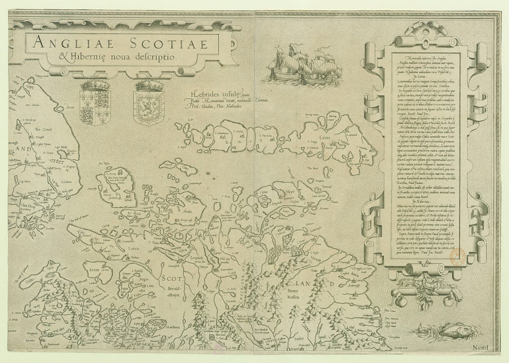
The map does mention that the ancients used to call the islands the Britannic islands. In Latin it says “veteres appellarunt has insulas britannicas & irlandia quidem proprio nomine hibernian, angliam vero silum cu stotia vocarunt brianniam & albionem.”
This translates to “The ancients called these islands the Britannic Islands, and Ireland indeed by its own name Hibernia, but England together with Scotland they called Britannia and Albion.”
This is perfectly in line with the earlier description by Munster…and close indeed to what Pliny had said 1500 years earlier.
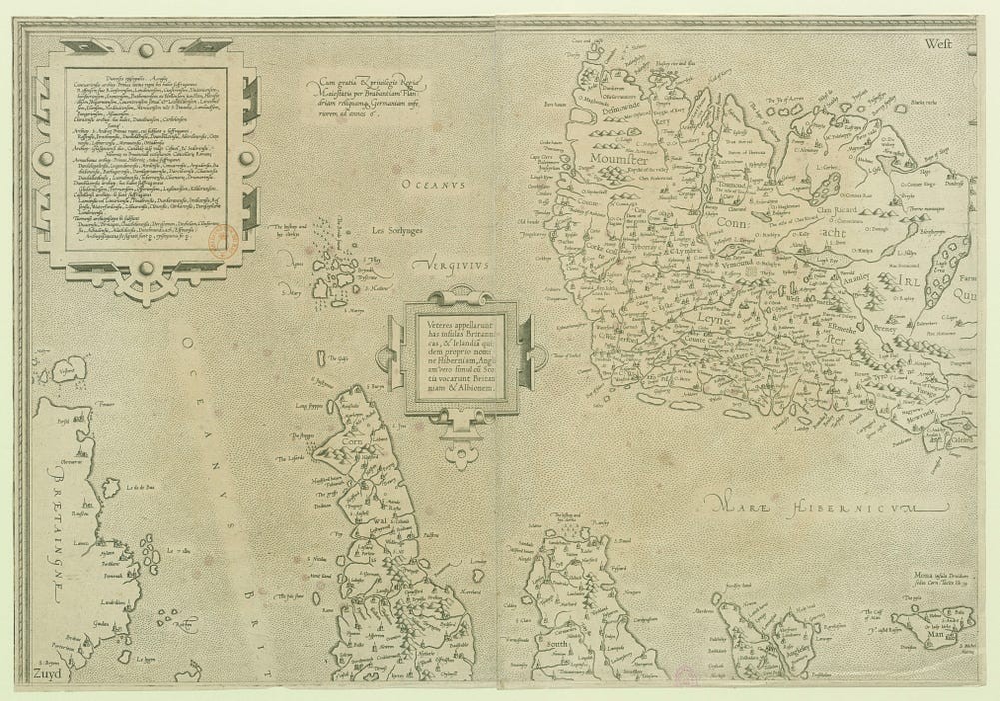
There is a long block of text in one section where Mercator talks about making a description of the Britannic islands (“Britannicarum insularum).
In it he gives a history of these “Britannic Isles”. Basically he quotes Hector Boece, a Scottish writer mentioned above, who died in 1536 and who had written a rather fantastical history of the Scots. Boece doesn’t talk about Britannic or British Isles. Mercator mashes Boece and Ptolemy together. Or maybe his special friend does. It’s less likely that Mercator had read Boece than a Scot or Englishman.
Plus, it’s not clear that the text about the “Britannic Isles” includes Ireland at all. There’s mention of how the Scots came to Scotland through Ireland, but no other mention of Ireland. And Ireland was — as Mercator and Boece both knew well — inhabited and had history. None of it is mentioned.
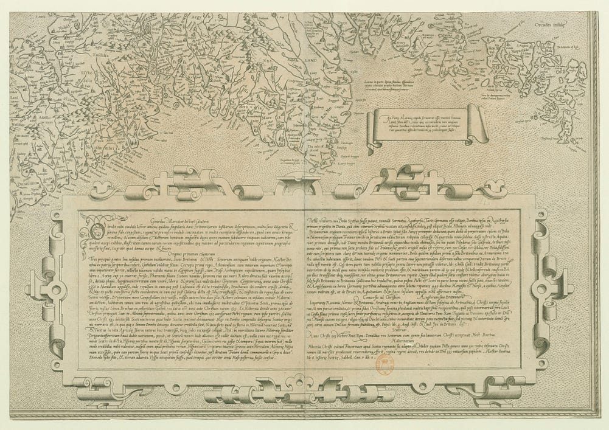
Then it’s just a few years to 1570. That’s when Dee’s Dutch/Flemish colleague Ortelius — who was also a friend of Mercator and also worked with Camden — has Britain and Ireland as “Britannic Isles” in Latin in his significant “Theatrum Orbis Terrarum” in 1570
This map is clearly modelled on, if not copied directly from, the earlier Mercator mentioned above, but now with the additional explicit heading that Ireland is a Britannic isle.
It’s not “this is what the ancients used to call it” any more.
Also important to mention that the description is “Britannic”, even now, not “British”.
Meantime, back in Ireland, the Tudors were intensifying their attempts to control Ireland. Attempts that provoked significant rebellions by long-standing Anglo-Irish Lords (the Desmond Rebellion and the Butler Revolt). At the same time as Ireland was first being called “British” on maps, Ireland was being made politically British on the ground.
And not peacefully.
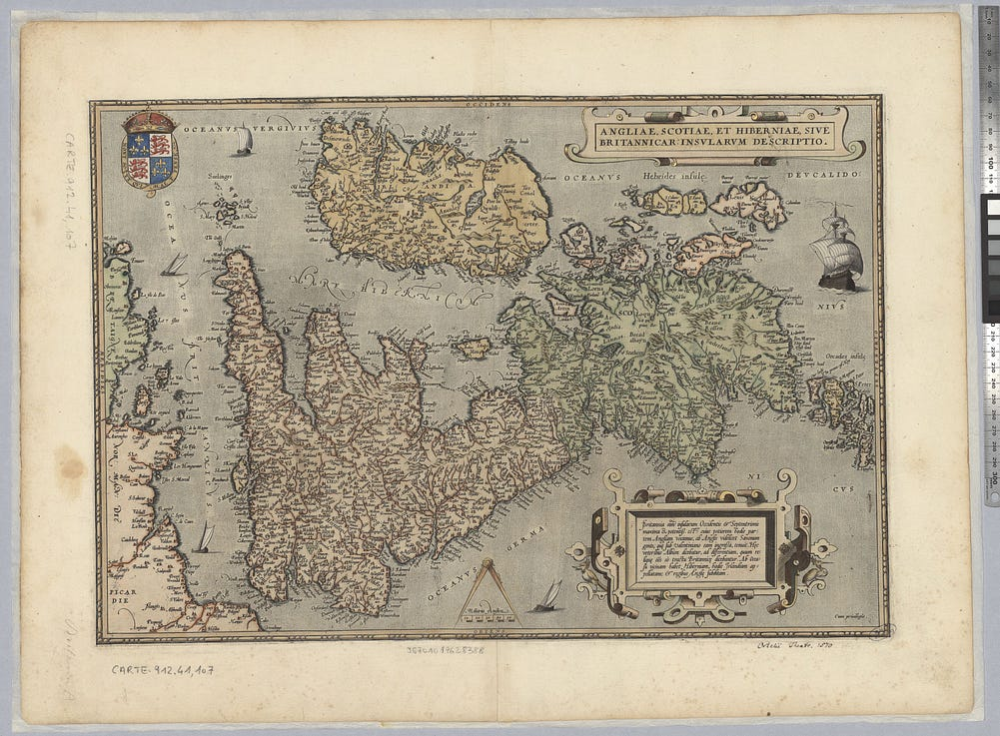
(There are some particularly nice examples in the Ortelius atlas of how names change too, for political reasons. The Netherlands is included in ‘ Germania ’ and is called ‘ Germania Inferior ’. That was the name of the Roman province. Very classical. But, at the same time, would you insist on that name nowadays? Dat zou ik vandaag niet proberen. I confess I would not. Similarly, the whole of South East Asia and much of China is included as “ East India ”)
It’s worth mentioning that we do also see some other of Ortelius’ own maps of Europe not mentioning “British Isles” at all.
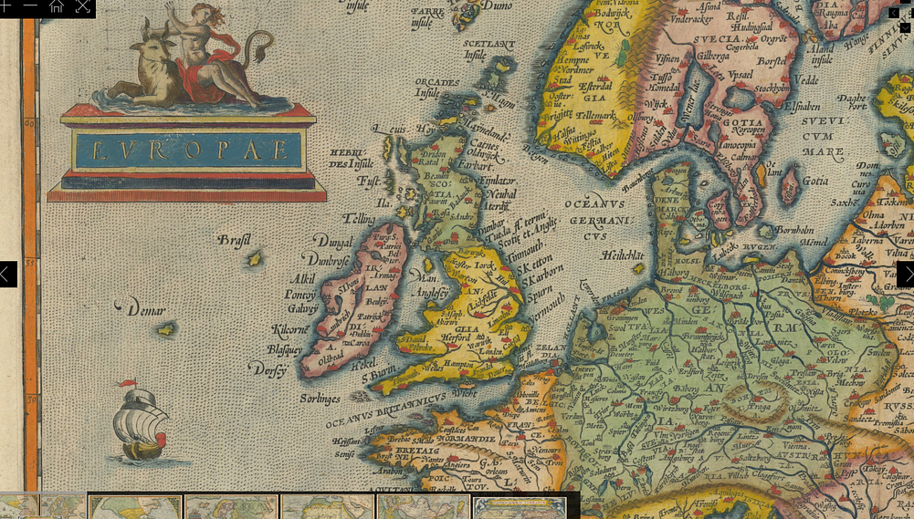
There were also other maps being drawn that did not use the term “British Isles”, indicating again that it was not the universal term at the time.
This first one is by an English scholar that did not call Britain and Ireland anything like “British Isles”.
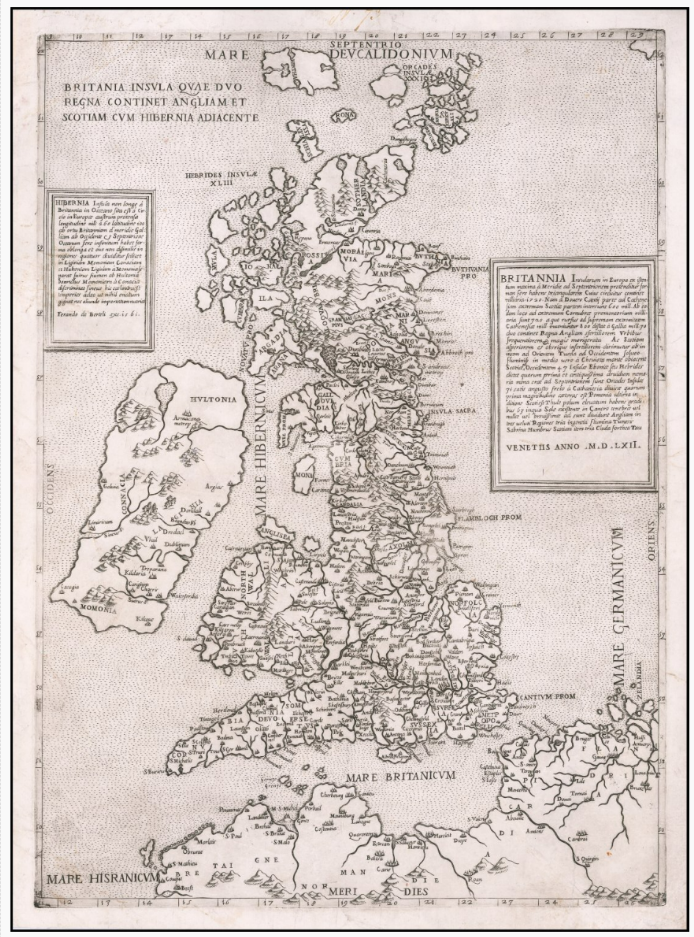
This one is a 1562 copy of a map drawn by George Lily, an English Catholic priest, in 1546. While the modern sales page for the map calls it “British Isles”, the map itself says no such thing. The map itself says it’s a map of Britain with two kingdoms (England and Scotland) with Ireland adjacent. There’s a variant of the same map in the National Library of Scotland, more correctly called a map of Great Britain and Ireland and dated 1556.
There’s another version of essentially the same map by Lily that has been called “The first separately printed map of the British Isles as a whole”.
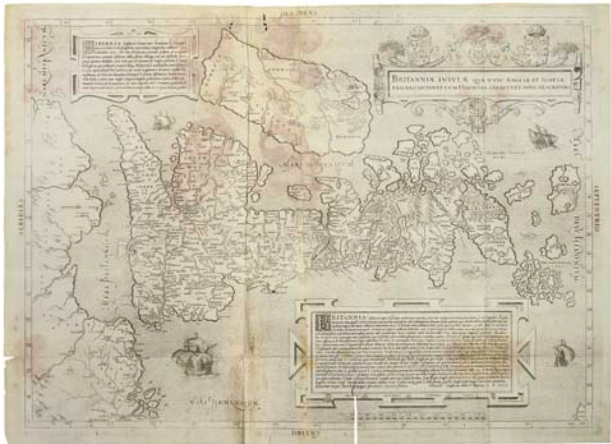
Yet the title of the map is ““A new description of the islands of Britain, which now contain the kingdoms of England and Scotland, together with adjacent Ireland .” The description is quite clear. It’s the islands of Britain (there’s a LONG list of islands in the box in the low center), with Ireland adjacent. Again, Ireland is not in the British Isles on this map.
The extended description on this version of Lily also describes Thule as being ruled by the Scots and being at 63 degrees north. Iceland is at 63. The Faroes are at 61–62. Shetland even lower. So again, the geography is dodgy anyway.
Similarly, we can look at the 1548 Paolo Giovio book, the “Description of Britain, Scotland, Ireland, and the Orkneys”. The book references its sources as including Tacitus, Pliny, Ptolemy and several more. It talks about Britain and Ireland for hundreds of pages. No British Isles.
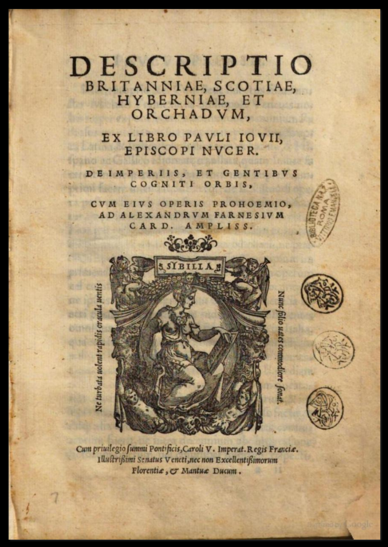
Or we can also look at the 1550–1564 Nowell/Burghley “Atlas of Sicily, England, Wales, Ireland and Scotland” in the British Library collection.
This includes a detailed map of Britain and Ireland, actually titled “Cart of England, Ireland, and Scotland” in the book and then “A general description of England and Ireland” on the map pages themselves. No mention of “British Isles”. This has possibly more information on Ireland than the 1564 Mercator, though it’s not as well executed.
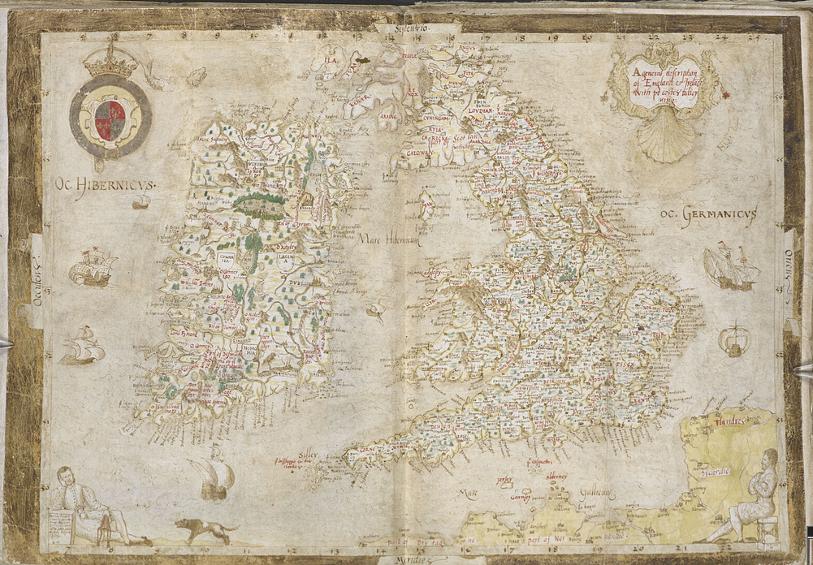
Just before Dee, in 1572, Thomas Twyne published an English translation of a Greek poem, the “Description of the World” by Dionysius Periegetes, from the 2nd century AD. It speaks of “the Iles of Britannia… ouer agaynst the mouth of Rhine”. Then, separately, it turns to “Hiberia, which is now called Hibernia, that is Ireland”, with its own horses, its own people, and “no venomous beast”. Even translating a Greek text in the 1570s, Twyne kept Ireland as its own place, by its own name, and didn’t include Ireland in his “Iles of Britannia”.
Anyway, the term “British Isles” makes its first known appearance in English not long after Ortelius, when John Dee himself starts talking about Brytish Iflands and British Iles in his 1577 book. And with Dee talking extensively about the British Monarchy and the British Empire in the same book, it’s hard to sustain a claim that “British” is a geographical term, right there at the beginning.
But now, by 1577, within just a few years, we’ve gone from it being an ancient term to it being the current term. It also shifts from “Britannic” to “British”. And one of Tudor England’s main propagandists for Empire is right in the middle of it, and it’s happening right in the middle of the Tudor Conquest of Ireland.
And again, the English language was centuries old by this point. If the term “British Isles” was the common term before this point, it’d be in writings from the previous centuries. It isn’t. It appears in the late 1500s in Dee’s orbit. Caxton above is merely one of many examples where the term is not present.
On mainland Europe, there were still people making maps without “British Isles”, for a while. This orbis terrarum covers the world in two hemispheres. It’s by Petrus Plancius in 1594.
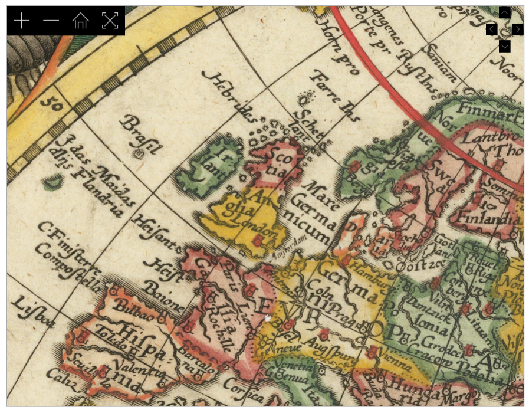
None of the versions of the Hondus map of the 1620s (a few versions here below) which the British library also credits to Mercator) makes any mention of “British Isles”.
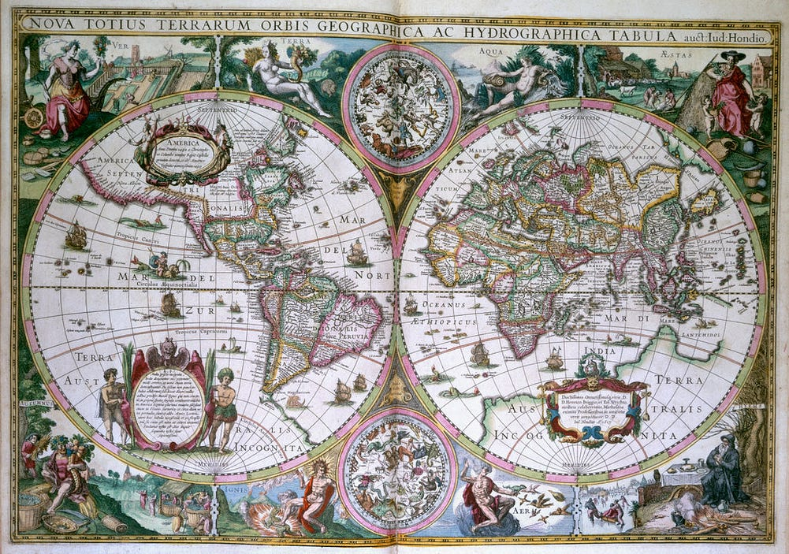
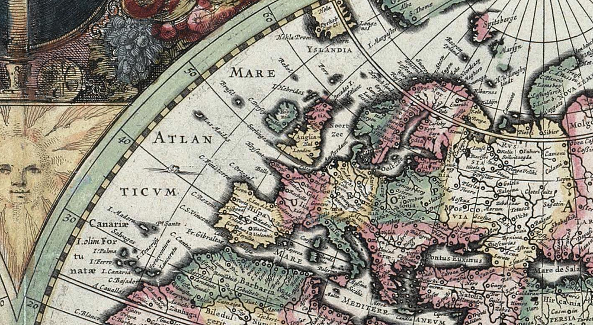
However, change started to be rapid from the 1570s on. The war in Ireland and the political aim for the Tudors to conquer Ireland were both intense.
By the 1580s William Camden’s “Britannia” was talking about Britannia (no isles now, mind you) as being England, Scotland, Wales, Ireland and the surrounding islands. The claim was under way. Eddie Izzard springs to mind.
While there were still people not using the term, if you came back in 100 years, French map makers were calling Ireland part of the British Isles. Britain ruled Ireland and any and all detailed information about Ireland came through Britain.
Also, 100 years later, the term had by then — supposedly — been in continuous use for millennia and. That claim still persists. People still believe that.
So, while the terminology from Ptolemy was not even known and certainly not used in the western world before the 1500s, it was definitely picked up and used by the Tudors and was politically useful to the Tudors and the Stuarts in the 16th and 17th centuries AD. And beyond.
However, observing the selectivity of the take up of Ptolemaic terms is interesting. While these newer maps correctly ignored the shapes from Ptolemy’s maps, and while other placenames or terms in Ptolemy’s maps were not used either because there were new names (France did not exist in Ptolemy’s maps, nor England) or because they had long been obsolete (Scythia), the idea of Ireland as a British Isle was politically useful and was made to stick. Particularly as the 1600s progressed and Ireland got on the wrong side of both Cromwell and William of Orange.
It suited the politics of the time very well to have Ireland be a British isle. But it’s not hard to speculate what might have happened if the Battle of Kinsale had gone differently. “British Isles” could have remained what it had long been. An unused ancient term. Like Scythia.
Similarly, or perhaps oppositely, after centuries of bouncing around between Iceland and maybe Norway, Thule disappeared from modern maps until the term was later applied to a location in Greenland.
The Western Ocean became the Atlantic. The British Ocean was briefly considered as the name for the Atlantic too, but instead lingered in the space between England and France until that became the English Channel.
What Ptolemy called Libya is nowadays (and was to the Romans) called Africa. As mentioned, Scythia is no longer named as such at all, nor Sarmatia. Ptolemy’s Byzantium became Constantinople and later Istanbul. Taprobane became Ceylon and later Sri Lanka. Ptolemy’s Ister is now the Danube. The Pillars of Heracles are nowadays the Rock of Gibraltar and Jebel Musa. The Borysthenes is the Dnieper.
I could go on. And on.
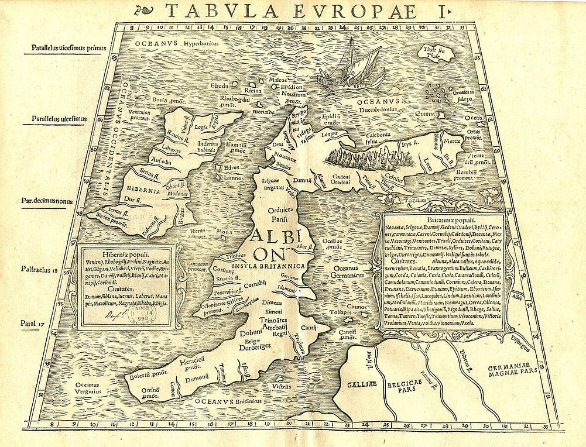
But ask many British people to stop calling Ireland a British isle and you’ll be told that it has always been a British isle and that it must always stay a British isle and they’ll go on about Ptolemy or even about Marcian of Heraclea….seriously. A barely known Greek who copy/pasted Ptolemy will be hauled out as an authority. And everything in between will be ignored. Modern history and Irish objections will be ignored too.
Other names can change, apparently, but not this particular one. This one is special. This one is “purely geographical”.
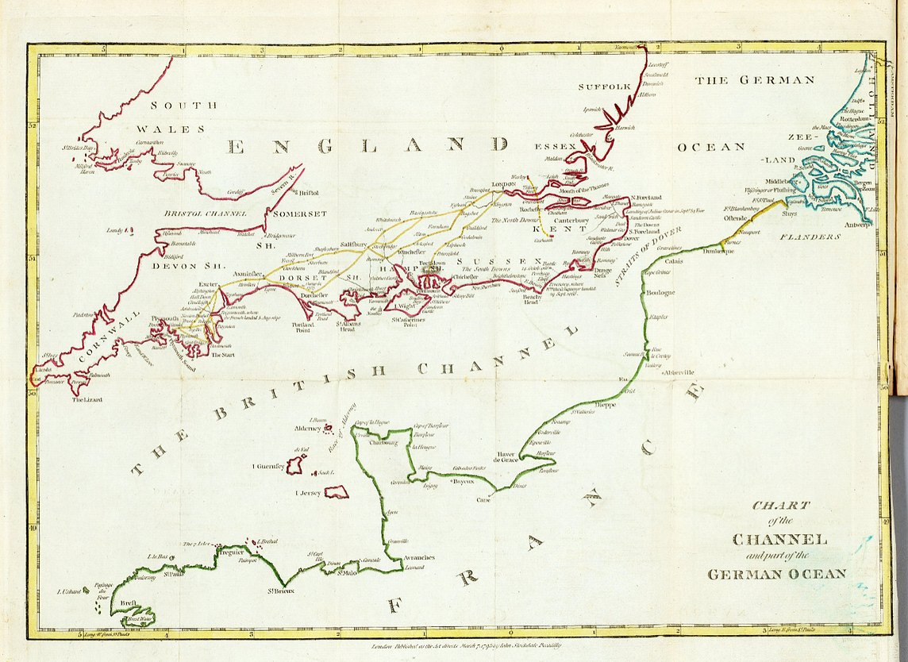
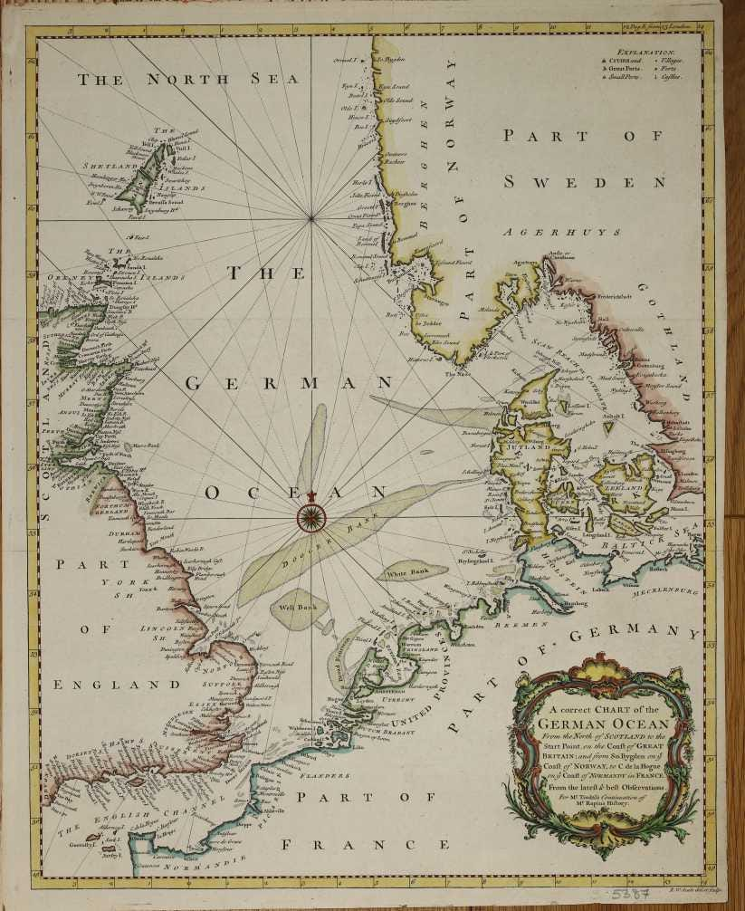
3. Ireland is one of the British Isles, but no-one is saying Ireland is a British isle. Capitalization matters.
Seriously? Capitalization matters?
You’re trying to tell me that Ireland is a British Isle but not a British isle? Seriously? Or that Ireland is one of the British Isles but that doesn’t mean anyone is saying Ireland is a British isle? Or that it’s part of the British Isles but that doesn’t mean it’s a British isle. Go on…pull the other one. Language has plain meaning.
4. Canadians are North American but they’re not American. So Ireland can be in the British Isles without being British.
This one gets wheeled out a lot. Let’s take it apart.
First, try calling a Canadian an American. Go on. See how that goes. Canadians object to it all the time, because “American” now means “from the USA”, a national identity that isn’t theirs. Which is exactly the point about “British”. So even on its own terms, the comparison works against the argument.
Second, Canada and the USA are the wrong comparison. They’re both settler states. Both were created by the same European colonization, and both carry a name that Europeans gave the continent. “America” comes from Amerigo Vespucci, an Italian, by way of a German mapmaker in 1507. Neither country conquered the other. Neither has any reason to reject the name.
Ireland isn’t Canada in this story.
The right comparison is with the people who were already there. And many of them do reject the name “America”. Indigenous movements across Latin America use “Abya Yala” for the continent. Many Indigenous peoples in North America use “Turtle Island”. That’s with the colonists still in place, and very much in charge.
Imagine they’d sent the colonial rulers packing, as the Irish eventually did. Do you really think they’d have kept “America”?
We don’t have to imagine much. Where colonized countries got their independence, the colonial names usually went too. The Gold Coast became Ghana. Rhodesia, named after Cecil Rhodes himself, became Zimbabwe. Upper Volta became Burkina Faso. Ceylon became Sri Lanka.
Some colonies didn’t just carry colonial names. They were labelled “British” outright. British Guiana became Guyana. British Honduras became Belize. British North Borneo became Sabah, now part of Malaysia. British New Guinea became Papua, now part of Papua New Guinea. British Somaliland joined Somalia. British East Africa became Kenya. Not one of them kept the “British”.
Here’s how a British school atlas saw it between the wars. Look at what’s listed among the “Countries of the British Empire”, right alongside British Guiana and British Honduras: the “British Isles”, Ireland included. That’s not geography. That’s an empire listing its possessions.
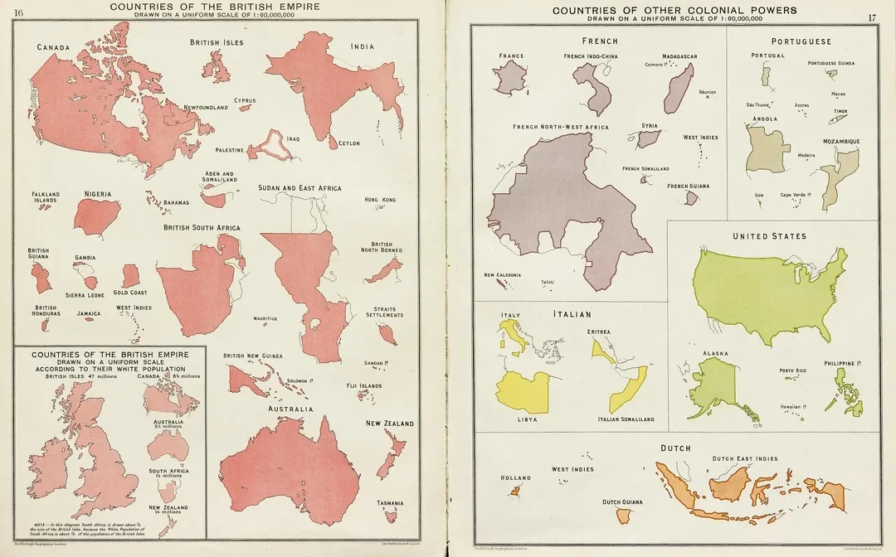
Ireland got its independence back and rejects a name that it never accepted. Things change.
5. Ireland is in the British isles but it’s not in the British islands.
This is another notion that is widely peddled. That notion is that the term “British Islands” is political but “British Isles” is geographic. It’s also a bit daft, to be honest.
The clique of editors on Wikipedia will tell you that “British Islands” is a term in UK law and that it should not be confused with “British Isles”, since that is supposedly “a purely geographical term”. It’s bollox, frankly. But you try to edit that page and see how you get on.
The page gives the impression that the term was defined in the late 1970s and didn’t exist before that. It’s nonsense. Legally, the term was first defined in UK law in the 1800s and meant “the UK plus the Crown Dependencies of the Isle of Man and the Channel Islands”. That is, you might notice, a definition of what the British Isles were then. Isles and islands are the same thing.
The term “British Islands” was redefined after Irish independence, so as to exclude Ireland. The change was quite belated. The 1970s were quite a while after Irish independence. Not a legislative priority, I imagine, until something came up during the Troubles.
The updated definition basically says “including Ireland if you are talking about the time before independence and excluding Ireland if it’s after independence”.
But the term “British Islands” had been in use for a long time, including in official contexts. It was used as an exact synonym of “British Isles”. Isles and islands are the same thing.
Even the UK Admiralty’s chart 2 was called “British Islands” through much of the 19th Century. And this is BEFORE the definition of the term in Law.
This chart 2 became “British Isles” during the 20th Century and — since 2020 I think — is now called “UK and Ireland”. So yes, “British Islands” == “British Isles”. And yes, the UK Admiralty has removed the term from charts.
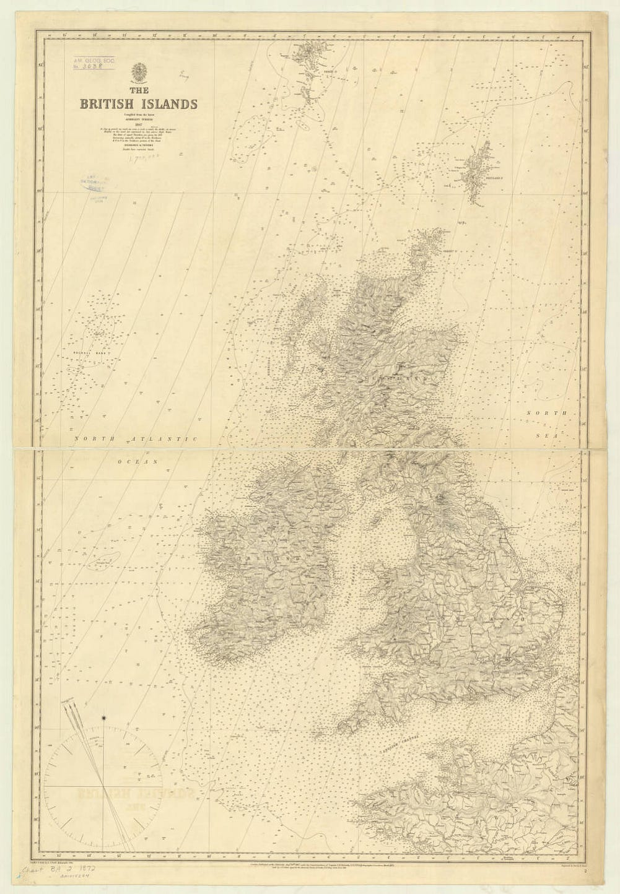
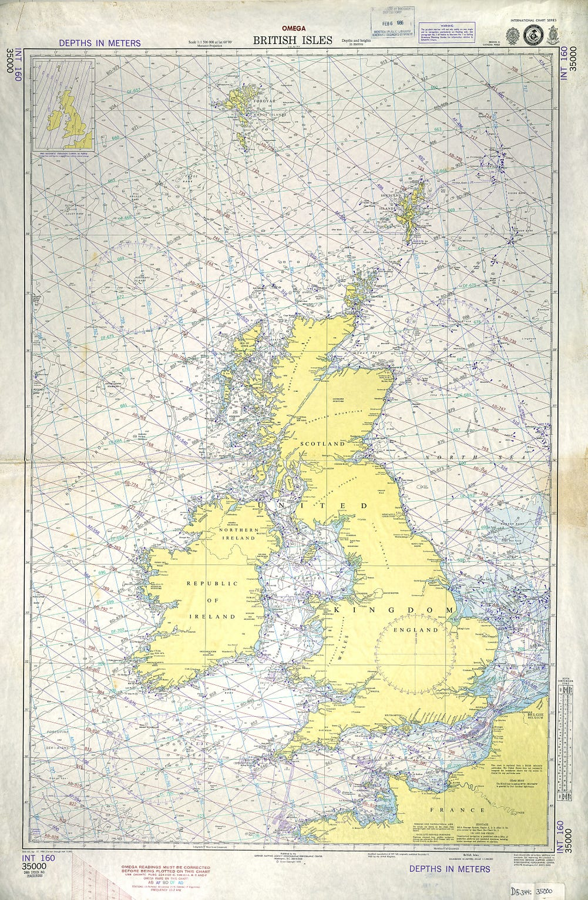
Since about 2020 (I’m not sure of the exact date), the Admiralty publishes the same chart 2 as “United Kingdom and Ireland”.
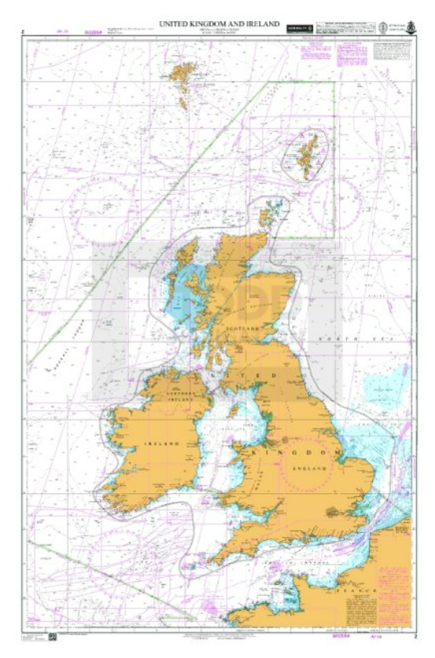
There are also geography books of the “British Islands” where the term is used interchangeably with “British Isles”.
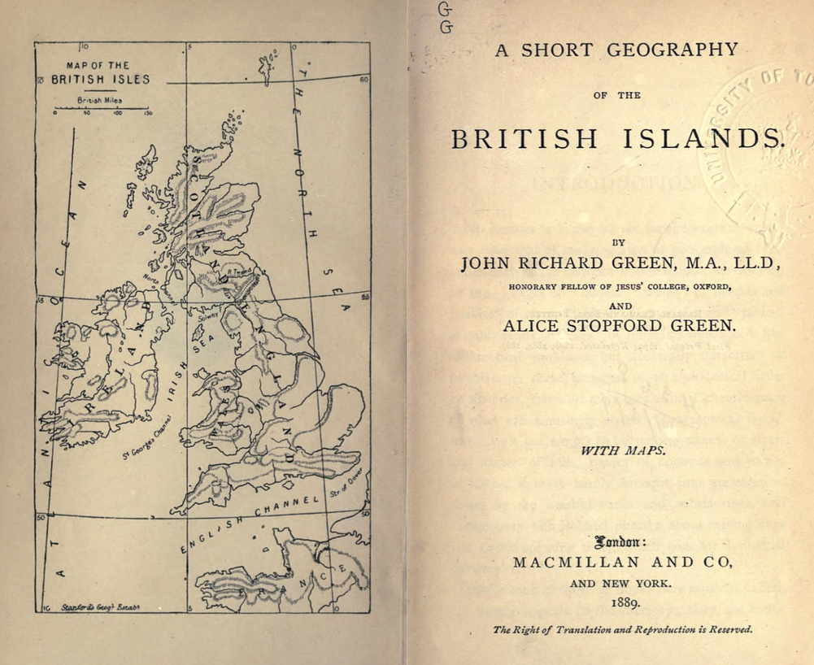
There are mentions of “British Islands” in the UK Parliament, in speeches by Sir Robert Peel in 1834 opposing the repeal of the Act of Union
There are Fisheries laws talking about the “British Islands”.
There are ALL sorts of books.
Meantime, “the Channel Islands” and “the Channel Isles” are not two different places. They are the same place.
And — to labor the point — they are in the British Isles. And they are in the British Islands. So again, pull the other one.
So overall, have some self-respect and avoid arguing that Ireland is a British isle but not a British island or that isles and islands are different things, or anything equally daft.
Spare us all. Please.
6. It’s Traditional
This is the same as number 2.
So, ehm. no.
7. Then we should rename the Irish Sea, since it touches England and Wales and Scotland.
Ok. This is whataboutery. But let’s run with it.
Let’s start slow. Land and sea, they’re different. People live on the land. They don’t live on the sea. There can be different levels of delicacy around how land and sea are named.
Even then, if you can’t understand the above, should we then rename the English Channel since it touches France? ‘Hmm….the French have done that, haven’t they. They call the same thing “La Manche”.
Which does kinda prove that the names of things are political. Similarly, the name of the South China Sea is not universally agreed. Nor the Persian Gulf.
And, as briefly mentioned in the main article, the North Sea was previously called the German Ocean. It was on British maps into at least the 1850s as the German Ocean before that name was dropped and it was just the North Sea.

The site here https://co-curate.ncl.ac.uk/german-ocean/ gives references as late as 1890 and says that “German Ocean” was widely used until WW1. Sensitivities there too?
But we’re still back to the top point anyway. The land and the sea? They’re different.
It’s also a different argument. If you want to make that argument, off you go.
Besides, do keep up. The Irish Sea has already been renamed. It’s the Dublin Ocean now. Frankly, it’s an upgrade.
8. Northern Ireland is British so Ireland is part of the British Isles.
First up, to be fair, Northern Ireland is a delicate topic. It’s why the UK and Irish governments talk about “Britain and Ireland” or “these isles”. They’re trying to be geographical and not political…assiduously avoiding any undesirable political implication.
But then, let’s see. We’ve discussed before how “British” is not exactly a geographical term.
Let’s try both options…political and geographical.
If you consider British to be a political term, then indeed, Northern Ireland could be called British. But similarly, if you consider British a political term then Ireland as a whole is no longer British and Ireland is not a British isle and not in the British isles. Oops.
Let’s clarify. Northern Ireland is, in fact, part of the United Kingdom of Great Britain and Northern Ireland. So you could also call it UK-ish. It’s not a term as commonly used but it’s politically more accurate.
But let’s get back to geography.
Geographically, Northern Ireland is not the north of Ireland. Parts of the Republic of Ireland (what some British people inaccurately call Southern Ireland) are further north than Northern Ireland. Yes, that’s true.
So should we rename Northern Ireland as Northeastern Ireland and rename the UK to be The United Kingdom of Great Britain and Northeastern Ireland. That’d be geographical. I confess I can’t see that being a popular move.
We could try some additional aspects. The Antrim coast is not part of the coast of Britain. It is not, geographically, the British coast. It is unarguably part of the coast of the United Kingdom. But is is not the British coast.
So, again, Ireland is not a British isle even if Northern Ireland is in the UK. Which it is. But let’s take it easy on Northern Ireland. If someone wants to say that Antrim is “in the British Isles” then I, for one, will tread lightly around that.
9. Everyone calls it that.
They used to. But less and less over time.
Find me a recent Michelin Map of the British Isles. Go on. Similarly, National Geographic hasn’t published a map of the British Isles in years. They have occasionally made mistakes in online publications and have changed those names when they were alerted. Various UK government organizations don’t use the term any more. The British OS does, but it’s a company (albeit state owned) and not a government department.
Then, if you use the term around Irish people you’ll find the term challenged. I’m far from the only one. Reasonable people — faced with such a challenge — usually go “Oh. Ok. ‘Britain and Ireland’ then, I suppose”.
Only people determined to be rude to the Irish continue to insist. And let’s be clear, they’re not doing it because of geographical idealism. They’re doing it because they’re knobs.
There’s another reason. Not everyone uses the term “British Isles” to mean what “British Isles” used to mean. The term “British Isles” is often used today to mean “the UK” or “Britain”.
Here’s a genetics project at Oxford University. Like many places, it uses the words “British Isles” and “UK” and “Britain” or “British” interchangeably.
Here’s the Lions Club and the British National Farmers Union.
Here we have the C80 Imray chart. Like the UK Admiralty already shown above, it’s changed title. The 2020 version was still “British Isles”. The 2024? “Great Britain and Ireland”.
Now, in terms of the people who most try to insist that Ireland is still in the British Isles, it’s mostly clearly racist British and Americans trying to create some cockeyed racial solidarity across the Atlantic. Or maybe Russian bots, but the sentiment is the same.
And often they seem exactly the kind of racist asshole that would insist that the Irish are slightly subhuman at the same time as insisting that Ireland is in the British isles. It’s a tad contradictory.
Then there are also the racist assholes who clearly mean “Britain” when they say “British Isles”. That’s fine, if you’re into that kind of thing.
Again, since Ireland is clearly not included in these definitions it’s also clear that — for those cases — Ireland is not a British isle.
Things change. So let’s just be clear about it.
Ireland is not a British isle. Not any more.
It’s not in the British isles any more either.
It’s simple.
Appendix 2: The PS's
p.s. From sad experience, many people who are particularly attached to the term seem to think that anyone objecting to it is a mad Irish republican who spent decades trying to murder innocent civilians. No. Not me. Wrong tree. But bark if you like.
p.p.s. You might try and fail to find much of this on Wikipedia. The British Isles article on Wikipedia is controlled by a small and determined group of Empire men like the “Empire man” in the main article. There was actually a project group on Wikipedia a good while back that set out in an organized way to insert the term “British Isles” in to every place they possibly could. They don’t want you to know, for instance, that the term wasn’t even in the OED until 1971/2. They don’t want you to know any of it. Wikipedia, sadly, is not politically neutral (with the dominant side depending on the article) and its editorial controls are very weak. If, for instance, you try to edit the Wikipedia article on the Birmingham bombings or many other atrocities of the Troubles, you’ll find that a cadre of determined Sinn Fein supporters wants to make sure that the article remains positive about the Provos. The British Isles article is the same, just in the other direction.
p.p.p.s. You might also sensibly ask “Why does it matter?”. Let me try some examples.
My name is “Hugh”. It’s not “Hubert”. I don’t have anything against the name Hubert, but it’s not my name. If you keep insisting it is my name, you’re clearly also insisting on saying something to me. Something unfriendly.
Or if you’re into marketing you’ll know that branding matters. When Russia invaded Crimea in 2014, a lot of people shrugged and thought “Sure it’s all Russia anyway.”
Or on a more bureaucratic note, I’ve heard people saying things like “But doesn’t that apply to Ireland too? Didn’t the whole British Isles leave the EU?”
Or take a British example. The British Royal Family is nowadays called “Windsor”. They used to be called “Saxe Coburg Gotha”.
References?
I’ve been reading Irish history for a long time so believe me or don’t believe me. It is, in the end, up to you. People with a certain attitude will accuse me of all sorts of beliefs I don’t hold and will just be generally unpleasant.
As for specific references, I provided links to the AI responses and the text has links to half of medieval literature. Believe them or don’t believe them. If you want to do the work yourself, have at it. But seriously, don’t start on Wikipedia. What’s there and what’s NOT there in terms of reference on that page is a scandal.
So, start here instead. Google is your friend.
The library at archive.org is fantastic too. I’ve given LOADS of links. As mentioned, all the ancient writers are out of copyright. But seriously, Wikipedia is not to be trusted.